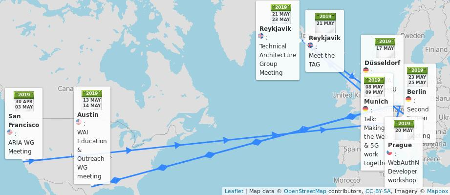
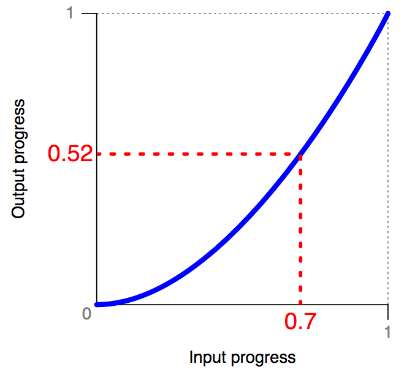
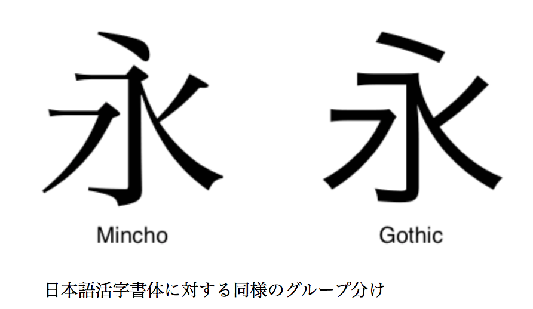

May@w3c: conferences, groups' meetings, W3Cx course on HTML5 Apps and Games, etc. https://www.w3.org/participate/eventscal.html
8 May: @dontcallmeDOM presents #Web5G vision at the #5GMediaRoad2019 conference, organized by @IRTpresse as part of the @mediaroad_eu EU project, in #Munich 🇩🇪
https://twitter.com/IRTpresse/status/1108386849935056897
https://twitter.com/w3cdevs/status/112395700099453337613-14 May: the @wai Education and Outreach #WorkingGroup participants hold a 2-day #f2fmeeting in #Austin 🇺🇸 https://www.w3.org/WAI/EO/wiki/EOWG_F2F_May_2017
https://twitter.com/w3cdevs/status/112395700945857741010 May: save this date! this is the deadline to register and submit your statement of interest for the #W3CWokshop on Web #games! #gaming #multiplayer #3D #WebXR #WebAssembly #APIs #cloud #WebAudio
Find out more in https://www.w3.org/2018/12/games-workshop/
https://cards.twitter.com/cards/18ce53z7ril/7ansq
https://twitter.com/w3cdevs/status/112395700690851430417 May: @yatil and @shawn_slh from the @wai team speak at AccessU'2019 in #Dusseldorf 🇩🇪 https://knowbility.org/programs/accessu/2019/ @knowbility
https://twitter.com/knowbility/status/1118215771077869568
https://twitter.com/w3cdevs/status/112395701329643929615 May: launching a new session of @w3cx #HTML5 Apps and Games #MOOC! Learn animation techniques with @micbuffa: https://www.edx.org/course/html5-apps-and-games @edXonline #apps #Web #gaming
https://cards.twitter.com/cards/18ce53z7ril/7anyh
https://twitter.com/w3cdevs/status/112395701186197094520 May: @FIDOAlliance organizes a FIDO #Authentication Developer Workshop in #Prague 🇨🇿 https://fidoalliance.org/event/developer-workshop-prague/ #WebAuthn #FIDO2
https://twitter.com/w3cdevs/status/112395701689926041921 May: @tag also organizes a public #devmeetup "Meet the TAG", also in #Reykjavik 🇮🇸. Join them in a conversation about the future of the Web! https://ti.to/w3c-tag/meet-the-tag-reykjavik
https://twitter.com/w3cdevs/status/112395702111875073221-23 May: the @tag holds its #f2fmeeting @vivaldibrowser's offices in #Reykjavik 🇮🇸 https://github.com/w3ctag/meetings/tree/gh-pages/2019/05-reykjavik
https://twitter.com/w3cdevs/status/112395701979333836923-24 May: the @w3c #SecondScreen #WorkingGroup participants meet in Berlin 🇩🇪, hosted by @fraunhoferfokus https://www.w3.org/wiki/Second_Screen/Meetings/May_2019_F2F
https://twitter.com/w3cdevs/status/112395702498588672121-22 May: 8th FOKUS Media Web Symposium @fraunhoferfokus, in #Berlin 🇩🇪 https://www.fokus.fraunhofer.de/go/mws #FOKUSMWS
https://twitter.com/fraunhoferfokus/status/1113736782187724800
https://twitter.com/w3cdevs/status/1123957022817386499Another @w3CAB election is starting, with no fewer than 12 candidates for 7 seats https://twitter.com/torgo/status/1124199801434845189
Should you need it, a reminder of what the @w3CAB is https://twitter.com/w3cdevs/status/991733862685437953
The 12 candidates are: @t (@Mozilla), Heejin Chung (@Samsung), @fantasai (#W3CInvitedExpert), @AaronGustafson (@Microsoft), @scarynige (@BBC), @chaals (@ConsenSys), Avneesh Singh (@DAISYConsortium) ...
https://twitter.com/w3cdevs/status/1124223859497033729See also their current priorities for 2019 https://www.w3.org/wiki/AB/2019_Priorities
https://twitter.com/w3cdevs/status/1124223863561314304A warm welcome to both the @w3c Immersive Web #WorkingGroup and #CommunityGroup's participants and chairs @Lady_Ada_King @cwilso @TrevorFSmith! 🤩 https://twitter.com/ImmersiveWebW3C/status/1123288283566333952
https://twitter.com/w3cdevs/status/1124288285768130561... Eric Siow (@intel), @alanstearns (@Adobe), @LeonieWatson (@TetraLogical) @cwilso (@Google), and Judy Zhu (@AlibabaGroup).
Read their nomination statements: https://www.w3.org/2019/05/02-ab-nominations
https://twitter.com/w3cdevs/status/1124295890867453953The #CSS easing module gives keywords and other syntaxes to use inside the #transition and #animation properties. Smooth #timing/easing functions correlate a time ratio to an output ratio, both expressed as <number>s.
https://twitter.com/w3cdevs/status/1125432599395143680CSS easing determines the speed of an animation or transition; how it speeds up at the start, and slows down at the end. Check out this pen (one out of many other ones) which demonstrates the predefined easing functions: https://codepen.io/KeenanC/pen/EqHbp via @CodePen
This CSS #animation technique has reached #CandidateRecommendation status. It's #timetoimplement! https://www.w3.org/TR/2019/CR-css-easing-1-20190430/ https://twitter.com/csswg/status/1123883839137505285
https://twitter.com/w3cdevs/status/1125432598023503872Check out the current browser compatibility at https://developer.mozilla.org/en-US/docs/Web/CSS/timing-function and do not hesitate to suggest an edit for this specification: https://github.com/w3c/csswg-drafts/blob/master/css-easing-1/Overview.bs
https://twitter.com/w3cdevs/status/1125432601039208448Thanks to @strontium91, the @w3c CSS Fonts Module Level 3 #WebStandard has been translated into Japanese: https://triple-underscore.github.io/css-fonts-ja.html #html5j #w3c_keio
#WebStandard @w3c CSS Fonts Module Level 3 は日本語に翻訳されています : https://triple-underscore.github.io/css-fonts-ja.html どうもありがとう @strontium91 ! #html5j #w3c_keio
https://twitter.com/w3cdevs/status/1125643223039393792Also 👋, we're actively looking at improving #diversity at the workshop. Are you part of an #inclusive community focused on #games? Do you develop, design, localize, monetize, distribute, play, review games? Come and share your experience! 👍
🗣️ 🗓️ Deadline EXTENDED to 24 May!
Read registration details at https://www.w3.org/2018/12/games-workshop/ https://twitter.com/w3cdevs/status/1123957006908514304
https://twitter.com/w3cdevs/status/1127910275695427584A big thank you from @w3cdevs 🤩 https://twitter.com/bromann/status/1128599785492103168
https://twitter.com/w3cdevs/status/1128601013353689089https://twitter.com/w3cdevs/status/1111278452743827457
The Web & Networks Interest Group is now ready to start its work on bridging network & application evolutions! http://www.w3.org/web-networks/ https://twitter.com/w3c/status/1128940523920740353
https://twitter.com/w3cdevs/status/1128951036247519232Are you based in #Europe and actively involved in @w3c #WebStandards development? Do apply for funding this work (before June 28) and help shape the future standards! https://www.standict.eu/node/2076/ @Stand_ICT https://twitter.com/Stand_ICT/status/1125291561695305729
Financial support is available for standardization linked with a list of identified topics that follow the @EU_Commission 2019 Rolling plan on ICT Standardisation. Many of them intersect with @w3c's agenda: #privacy #security #a11y, #payments, etc. https://www.standict.eu/node/2076/#Topics
https://twitter.com/w3cdevs/status/1129018837893079040Applicants must reside/work in #Europe 🇪🇺, and have experience wrt the development of standards. To our followers who give feedback, contribute to and implement @w3c specifications, how about submitting an application now? 🙋♀️🙋♂️ https://www.standict.eu/applicant/register
https://twitter.com/w3cdevs/status/1129018842204778498What's on the menu for Web #games? Come and learn from the greatest games chefs at this #W3CWokshop chaired by @deltakosh (@Microsoft) with help from @tidoust and all other program committee members!! Register soon before 24 May and bring your own lapwok! https://cards.twitter.com/cards/18ce53z7ril/7ansq
https://twitter.com/w3cdevs/status/1130877142806540293Discussions and feedback, as usual, should happen on the github repository https://github.com/WICG/ad-click-attribution/issues/
.@webkit's latest addition for privacy-preserving ad-click tracking has been submitted as a @wicg_ proposal https://wicg.github.io/ad-click-attribution/index.htm https://twitter.com/webkit/status/1131185442471256066
https://twitter.com/w3cdevs/status/1131227024788512774To increase gender diversity and expertise from across multiple countries and cultures, @w3c has established a TPAC Diversity Fund, generously sponsored by W3C Members @Siteimprove, @paciellogroup, @microsoft, @Samsung, @TetraLogical, @dynomapper, @Adobe, and @Coil https://twitter.com/w3c/status/1133005508464533504
TPAC (aka Technical Plenary & Advisory Committee) is @w3c's biggest annual event, where most W3C groups come together in the same place to have their #f2fmeeting, etc. Upcoming #w3cTPAC is 16-20 September, in #Fukuoka, 🇯🇵 🗾
https://cards.twitter.com/cards/18ce53z7ril/7fqvr
https://twitter.com/w3cdevs/status/1133021507368693760#w3cTPAC is a unique opportunity for the @w3c community at large to meet together, exchange ideas, plan for new work, and socialize.
https://twitter.com/w3cdevs/status/1133021512796123136So, please apply before 14 July 2019! 📑 Applicants should be from a group that is under-represented in the #Web community, and unable to attend #w3cTPAC without financial help.
Find more info in the application form: https://www.w3.org/2002/09/wbs/1/diversity-fund-2019/ #diversity #inclusion
https://twitter.com/w3cdevs/status/1133021514113146880Want your Web or native #apps to "blend"? Check out the latest @w3c #CSS first #WorkingDraft: CSS Color Adjust Module Level 1 https://www.w3.org/TR/2019/WD-css-color-adjust-1-20190521/ #timetocomment #timetodiscover https://twitter.com/csswg/status/1131682973722566657
The idea isn't new. Over 20 years ago, Netscape ONE tried to visually blend #Web apps into their environment by making the desktop itself a #webapp. The original #CSS level 2 had "system colors" (now deprecated). Later, the CSS Color module proposed "flavor"
https://twitter.com/w3cdevs/status/1133300584717672449The module improves #accessibility, too. #Developers can find out if #a11y features, such as high-contrast mode, are in force and cooperate by adjusting the style
https://twitter.com/w3cdevs/status/1133300588719083521The new model uses media queries to check if the user has defined colors. The "color-scheme" property makes an element use them. You can even choose to allow only light or dark color schemes: https://www.w3.org/TR/2019/WD-css-color-adjust-1-20190521/#color-scheme-prop
https://twitter.com/w3cdevs/status/1133300587360071680The @csswg invites implementers to track open issues at https://github.com/w3c/csswg-drafts/issues?q=is%3Aopen+is%3Aissue+label%3Acss-color-adjust-1
https://twitter.com/w3cdevs/status/1133300589989957633